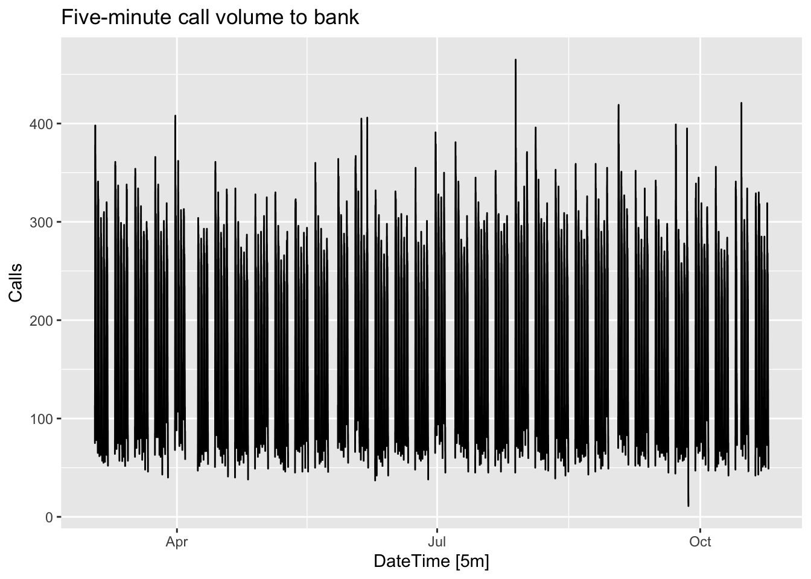
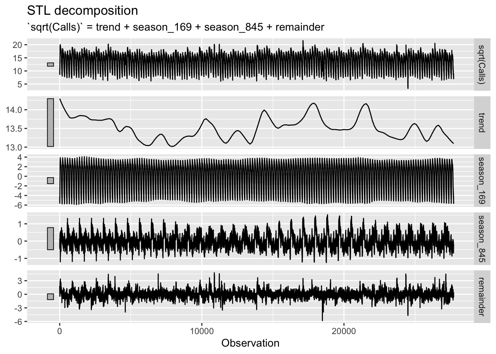
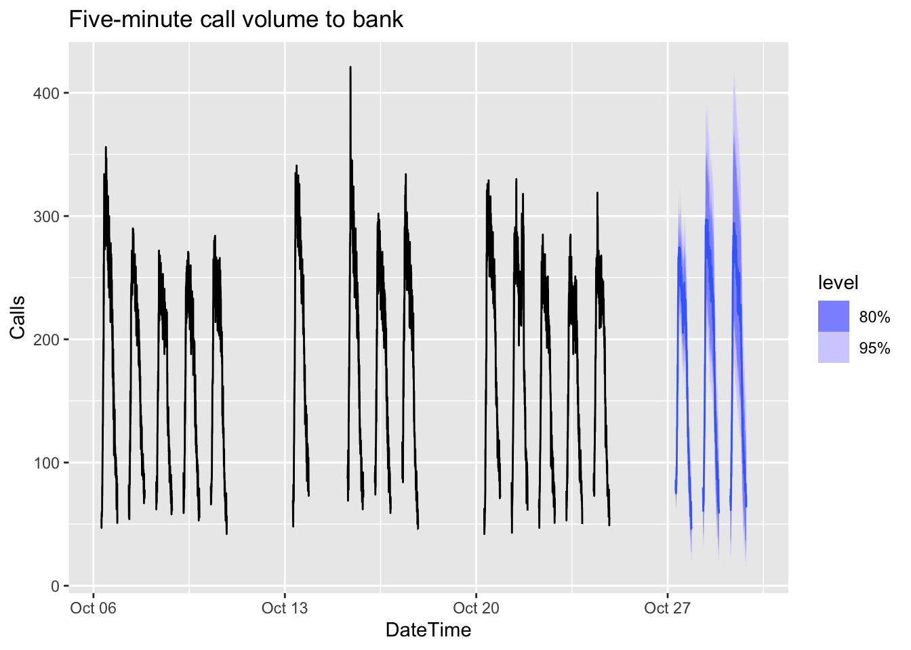
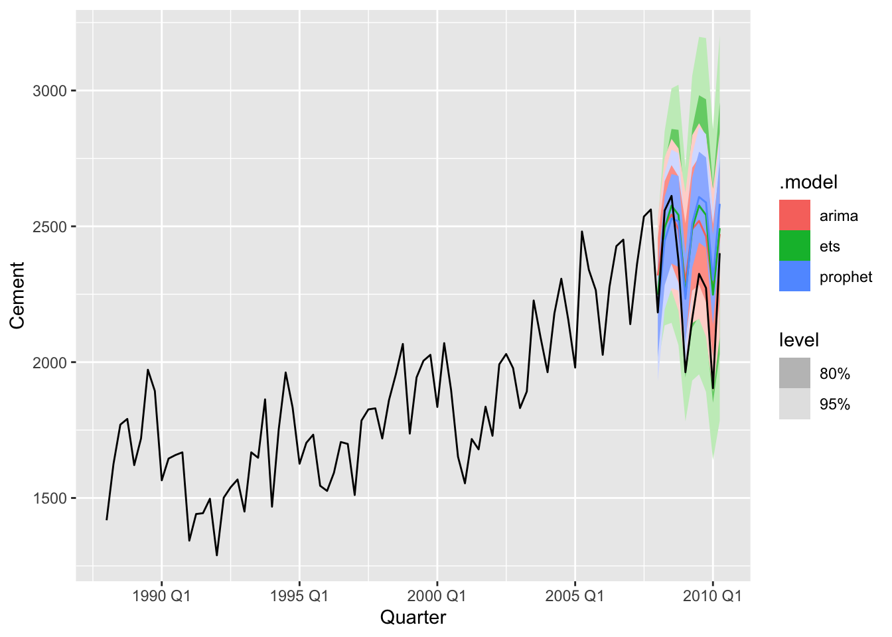
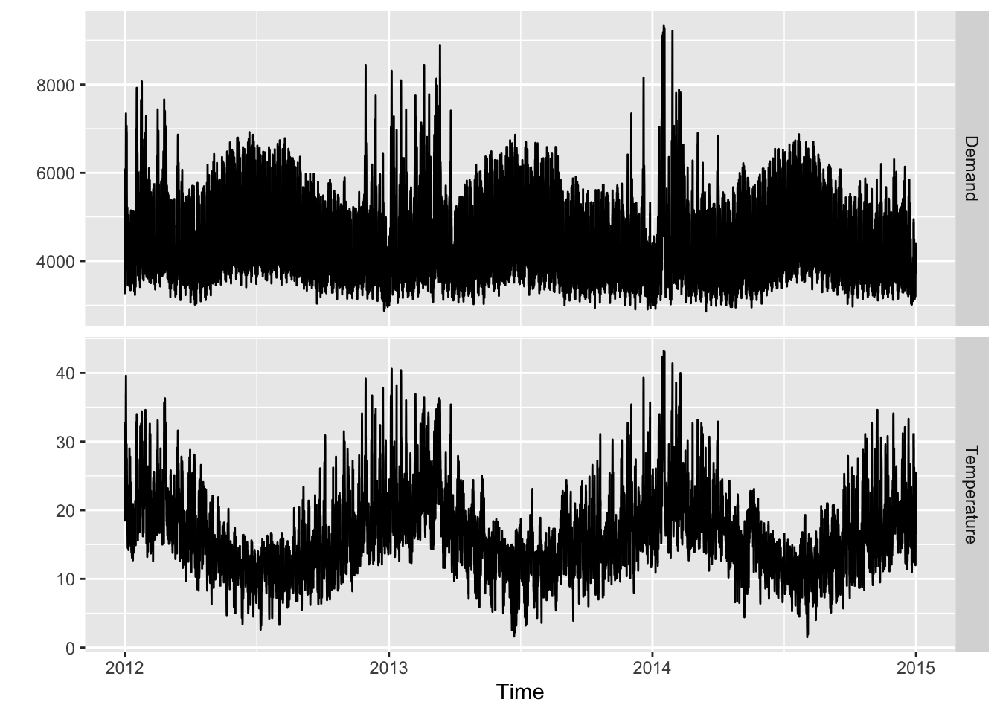
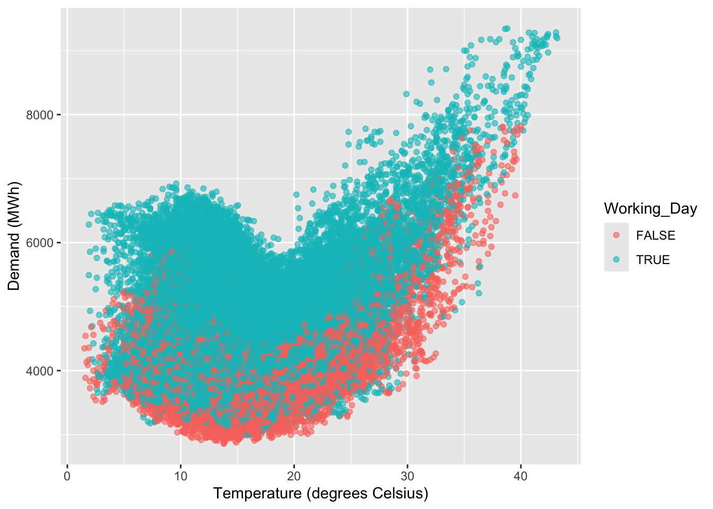
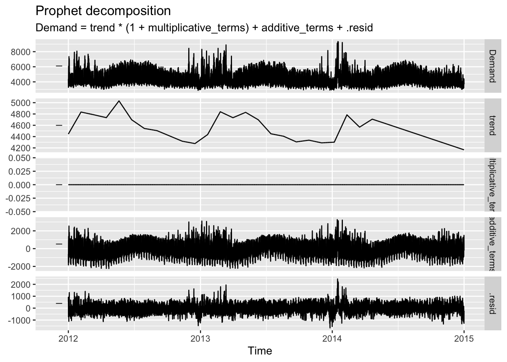
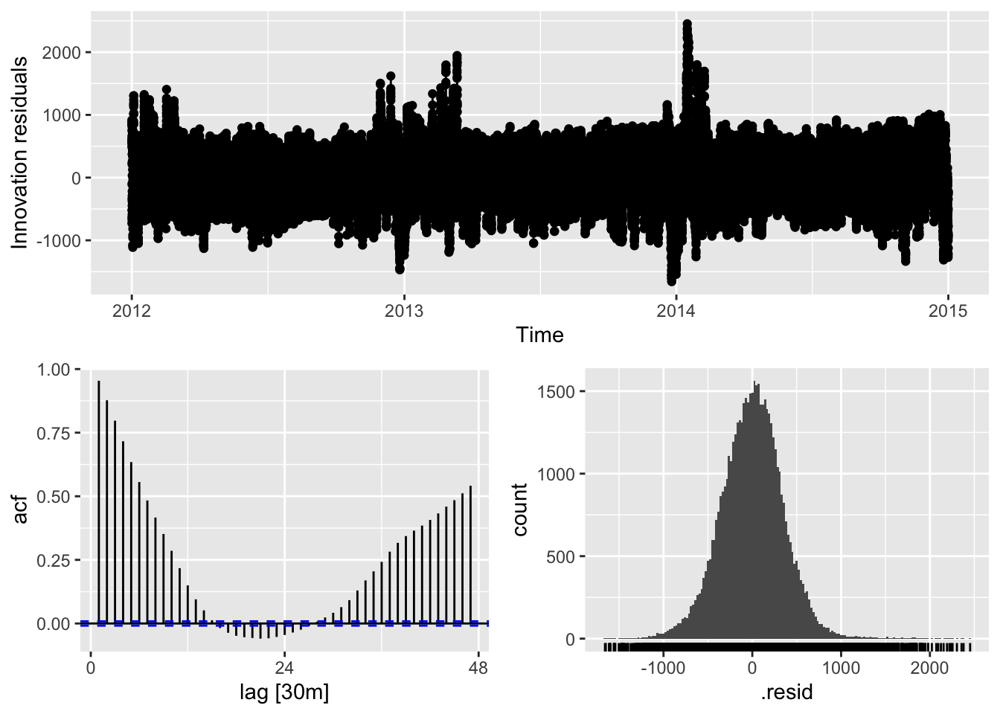
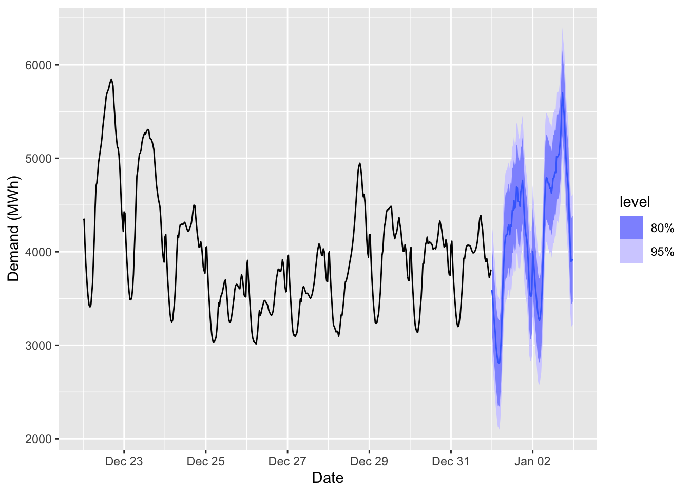

Chapter 12 Advanced forecasting methods
# loading libraries
library(tsibble)
library(tsibbledata)
library(tidyverse)
# to read data
library(rio)
library(ggplot2)
library(fabletools)
library(feasts)
library(fpp3)
library(latex2exp)
library(forecast)12.1 Complex seasonality
Hourly data usually has three types of seasonality: a daily pattern, a weekly pattern, and an annual pattern.
bank_calls |>
fill_gaps() |>
autoplot(Calls) +
labs(y = "Calls",
title = "Five-minute call volume to bank")
There is complex seasonality in the data:
- A strong daily seasonal pattern (169 5-minut intervals per day)
- A weak weekly seasonal pattern with period 169 * 5 = 845
- If a longer series of data were available, we may also have observed an annual seasonal pattern.
12.1.1 STL with multiple seasonal periods
calls <- bank_calls |>
mutate(t = row_number()) |>
update_tsibble(index = t, regular = TRUE)
calls |>
model(
STL(sqrt(Calls) ~ season(period = 169) +
season(period = 5*169),
robust = TRUE)
) |>
components() |>
autoplot() + labs(x = "Observation")
# Forecasts from STL+ETS decomposition
my_dcmp_spec <- decomposition_model(
STL(sqrt(Calls) ~ season(period = 169) +
season(period = 5*169),
robust = TRUE),
ETS(season_adjust ~ season("N"))
)
fc <- calls |>
model(my_dcmp_spec) |>
forecast(h = 5 * 169)
# Add correct time stamps to fable
fc_with_times <- bank_calls |>
new_data(n = 7 * 24 * 60 / 5) |>
mutate(time = format(DateTime, format = "%H:%M:%S")) |>
filter(
time %in% format(bank_calls$DateTime, format = "%H:%M:%S"),
wday(DateTime, week_start = 1) <= 5
) |>
mutate(t = row_number() + max(calls$t)) |>
left_join(fc, by = "t") |>
as_fable(response = "Calls", distribution = Calls)
# Plot results with last 3 weeks of data
fc_with_times |>
fill_gaps() |>
autoplot(bank_calls |> tail(14 * 169) |> fill_gaps()) +
labs(y = "Calls",
title = "Five-minute call volume to bank")## Warning: Removed 100 rows containing missing values or values outside the scale range (`geom_line()`).
12.2 Prophet model
The model for daily data with weekly and yearly seasonality + holiday effects.
\[ y_t = g(t) + s(t) + h(t) + \varepsilon (t) \]
where
- \(g(t)\) describes a piecewise-linear trend. The knots are automatically selected if not specified.
- \(s(t)\) is the seasonal components that consists of Foyrier terms. By default, the order of period 10 is used for annual seasonality, order 3 is used for weekly.
- \(h(t)\) is holiday effects are added as dummy vars.
- \(\varepsilon (t)\) is a white noise error terms.
12.2.1 Example: Quarterly cement production
cement <- aus_production |>
filter(year(Quarter) >= 1988)
train <- cement |>
filter(year(Quarter) <= 2007)
fit <- train |>
model(
arima = ARIMA(Cement),
ets = ETS(Cement),
prophet = prophet(Cement ~ season(period=4, order = 2,
type = 'multiplicative'))
)Note! The seasonal term must have the
periodfor quarterly and monthly data.

## # A tibble: 3 × 10
## .model .type ME RMSE MAE MPE MAPE MASE RMSSE ACF1
## <chr> <chr> <dbl> <dbl> <dbl> <dbl> <dbl> <dbl> <dbl> <dbl>
## 1 arima Test -161. 216. 186. -7.71 8.68 1.27 1.26 0.387
## 2 ets Test -171. 222. 191. -8.07 8.85 1.30 1.29 0.579
## 3 prophet Test -175. 247. 214. -8.33 9.83 1.46 1.43 0.70412.2.2 Example: Half-hourly electricity demand
vic_elec |>
pivot_longer(Demand:Temperature, names_to = "Series") |>
ggplot(aes(x = Time, y = value)) +
geom_line() +
facet_grid(rows = vars(Series), scales = "free_y") +
labs(y = "")
elec <- vic_elec |>
mutate(
DOW = wday(Date, label = TRUE),
Working_Day = !Holiday & !(DOW %in% c("Sat", "Sun")),
Cooling = pmax(Temperature, 18)
)
elec |>
ggplot(aes(x=Temperature, y=Demand, col=Working_Day)) +
geom_point(alpha = 0.6) +
labs(x="Temperature (degrees Celsius)", y="Demand (MWh)")
fit <- elec |>
model(
prophet(Demand ~ Temperature + Cooling + Working_Day +
season(period = "day", order = 10) +
season(period = "week", order = 5) +
season(period = "year", order = 3))
)
fit |>
components() |>
autoplot()

elec_newdata <- new_data(elec, 2*48) |>
mutate(
Temperature = tail(elec$Temperature, 2 * 48),
Date = lubridate::as_date(Time),
DOW = wday(Date, label = TRUE),
Working_Day = (Date != "2015-01-01") &
!(DOW %in% c("Sat", "Sun")),
Cooling = pmax(Temperature, 18)
)
fc <- fit |>
forecast(new_data = elec_newdata)
fc |>
autoplot(elec |> tail(10 * 48)) +
labs(x = "Date", y = "Demand (MWh)")